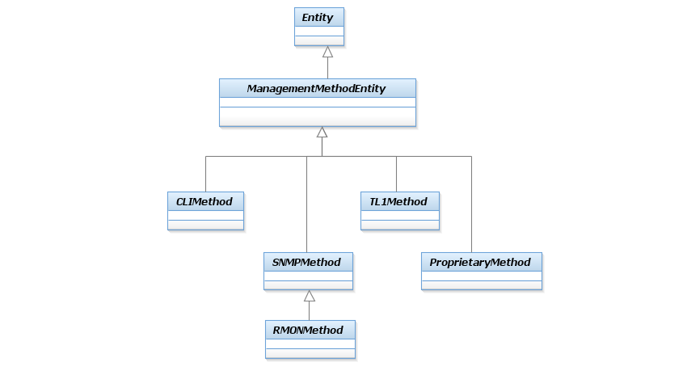

_ Root Business Entities Addendum Figures UML Documentation
SID Models::Common Domain::Root Business Entities ABE::_ Root Business Entities Addendum Figures::Figure R.13 - ManagementMethodEntity Class Hierarchy Diagram Figure R.13 - ManagementMethodEntity Class Hierarchy ManagementMethodEntity is an abstract class for representing the different types of management methods that can be used to gather a particular type of management information. For example, this enables configuration setting classes to be defined as using CLI, while configuration monitoring classes could be defined as using a different method, such as SNMP. Its main subclasses are shown in the Figure below.The design of how management information is obtained uses this class to gather specific types of information, and the ManagementMethodEntity class to obtain the desired data using an appropriate method. This combination of class hierarchies enables different management methods (e.g., CLI vs. SNMP) to be used to gather different types of management data, and is unique to the SID information model.Figure R.04 – ManagementInformation and Methods for Obtaining Management Data showed how ManagementInfo and ManagementMethodEntity work together to provide a single, scalable solution for gathering different types of management information that describe a management entity. This is especially important for some types of network devices, where different protocols and approaches are used to configure vs. monitor the device.

Properties:
View
Name
Figure R.13 - ManagementMethodEntity Class Hierarchy